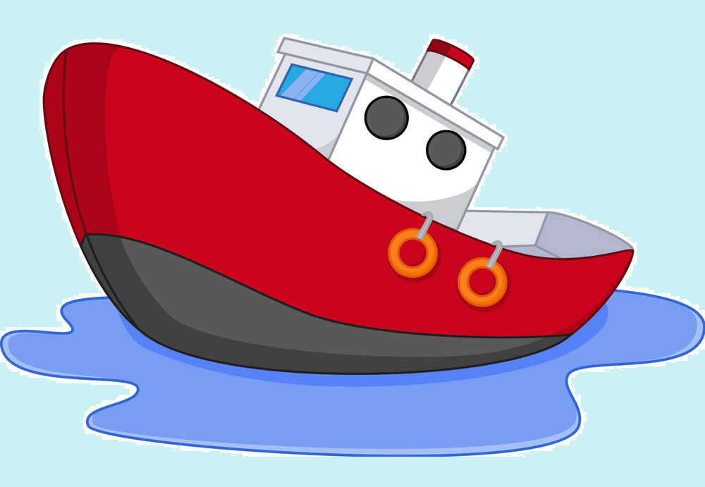

a hobbyist programmer
My name is Vanbavinckhove Franky i am a retierd seaman from Belgium, I started as an able body seaman for a couple of years, in the biggest dredging company of the world JDN, and later worked my way up to become first mate. Allthough i have a certificate for captain, i was never able to fulfill this task for my company. At the age of 60, i said after more than 35 years of faithful service Goodbye, and left to enjoy my well earned pension.One of my hobbies is trying to learn Python among other things. My favorite occupation is watching a good game of footbal with a nice chilled pint of beer and a good piece of good cheese.
As a first officer with 35 years of experience i was incharge of navigation and the daily tasks on board of the ship. I was mostly employed on dredging vessels and without being cockie?, i had a fair bit of knowledge as to how every thing was done on board.
As i apprentice pythonista i am completely in the capable hands of my mentor Angela Yu, who is doing a fine job in teaching thousands of peaple around the world with well structure courses. Well done Angela.
Street: Aalscholverstraat 49